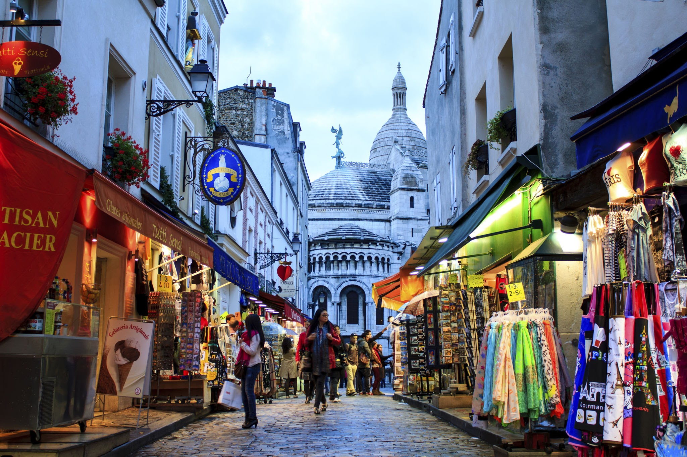

Paris, Pháp
Paris là thủ đô và là thành phố lớn nhất của Pháp. Nó nổi tiếng với kiến trúc cổ điển, nghệ thuật và văn hóa phong phú. Dưới đây là một số địa điểm du lịch nổi tiếng ở Paris:
Tháp Eiffel (tiếng Pháp: Tour Eiffel) là một công trình kiến trúc bằng thép nằm trên công viên Champ-de-Mars, cạnh sông Seine, thủ đô Paris nước Pháp. Vốn có tên nguyên thủy là Tháp 300 mét (Tour de 300 mètres), công trình này do kỹ sư Gustave Eiffel và các đồng nghiệp của mình thiết kế và xây dựng từ năm 1887 tới năm 1889 nhân dịp Triển lãm thế giới năm 1889, và cũng là dịp kỷ niệm 100 năm Cách mạng Pháp.

Louvre, hoặc Viện bảo tàng Louvre (tiếng Pháp: Musée du Louvre [myze dy luvʁ] ⓘ), là một viện bảo tàng nghệ thuật và di tích lịch sử tại Paris, Pháp. Có vị trí ở trung tâm lịch sử thành phố, bên bờ sông Seine, Viện bảo tàng Louvre vốn là một pháo đài được vua Philippe Auguste cho xây dựng vào năm 1190

Montmartre là một khu phố của Paris, nằm trên quả đồi lớn thuộc Quận 18. Từng là nơi tập trung của nhiều họa sĩ nổi tiếng, cộng với nhà thờ Sacré-Cœur, cối xay gió Moulin de la Galette, các con phố nhỏ, quán cà phê, nhà hàng, Quảng trường Tertre, thang máy đồi Montmartre,... Montmartre là một trong những địa điểm thu hút du khách nhất Paris.
